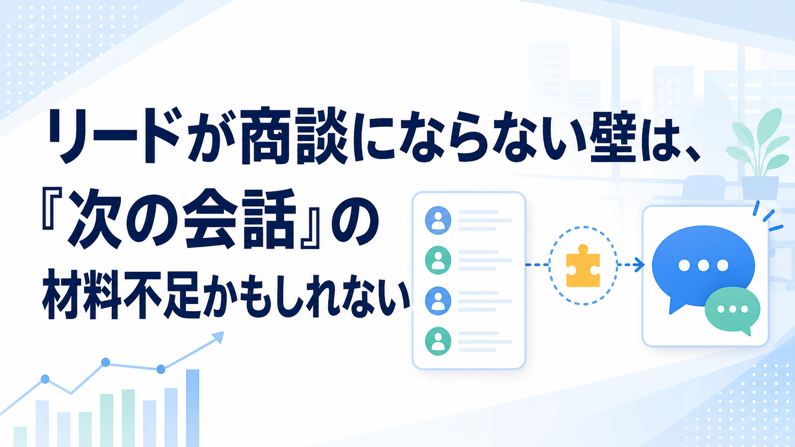

みなさんこんにちは、Valorize AIの斎藤です。
リードは増えているのに、商談が思ったほど増えない。
展示会で名刺は集まった。資料請求もある。問い合わせも前より増えている。なのに、営業会議で見る商談数はあまり変わっていない。
この違和感、BtoBの営業・マーケティングではかなり起きやすいものだと思います。
しかも厄介なのは、誰かが手を抜いているようには見えないことです。マーケティングは接点を作っている。営業も忙しい中で対応している。それでも、リードから次の営業会話へ進む流れが弱い。
こういうとき、つい「リードの数が足りないのでは」「営業がもっと早く追うべきでは」「マーケティングリードの質が低いのでは」と考えたくなります。
もちろん、数もスピードも質も大事です。ただ、それだけでは説明しきれないケースがあります。
私は、リードが商談化しない背景には、次の会話を作る材料不足があると考えています。
リードはあるのに、商談が増えない違和感
BtoB企業のマーケティング課題を見ても、リード獲得だけでなく、その後の商談化や受注、顧客理解が大きなテーマになっています。
たとえば2025年の調査では、BtoB企業のマーケティング課題として「商談化〜受注」や「顧客理解の不足」が上位に挙がっています（出典: ナイル株式会社の2025年調査）。つまり、接点を増やすこと自体は進んでいても、そこから商談や受注へつなげるところに壁がある、ということです。
これは現場の感覚とも近いのではないでしょうか。
リード一覧には会社名も担当者名もある。流入元も分かる。資料請求日や展示会で話した記録も、どこかには残っている。
でも営業から見ると、「で、この人には何を話せばいいのか」が見えにくい。
一方でマーケティング側から見ると、「せっかく渡したリードが、その後どうなったのか」が見えにくい。
この状態になると、営業とマーケティングの間で、リードは存在しているのに会話が育っていかない、ということが起こります。
商談化しない理由を、量ではなく会話の材料で見る
リードを増やすことは、もちろん大切です。接点がなければ商談も生まれません。
ただ、リードが増えたあとに必要なのは、単なる名簿ではありません。営業が次に何を聞き、何を伝え、どの文脈で接点を続けるのかを考えるための材料です。
たとえば、同じ資料請求でも背景は違います。
今すぐ比較検討している人もいれば、数か月後の情報収集かもしれません。個人的な勉強のために見ている場合もあれば、社内で課題が顕在化していて、上司に説明する材料を探している場合もあります。
この違いが分からないまま営業へ渡ると、営業はどうしても「とりあえず電話する」「一斉にメールする」「反応がなければ止まる」という動きになりがちです。
でも本来、次の会話に必要なのは、「この人は何に引っかかって接点を持ったのか」「どの課題なら話が進みそうか」「今すぐ営業が動くべきなのか、少し温めるべきなのか」といった判断材料です。
ここが薄いと、リードの数は増えているのに、商談化の手応えは増えません。
リード獲得の問題に見えて、実は接点の後ろ側で会話の材料が残っていない。ここに目を向けると、見直すべき場所が少し変わってきます。
営業とマーケティングの間で、リードの意味がずれていく
営業とマーケティングの連携課題も、よく話題になります。
ただ、これは「仲が悪い」「会議が少ない」という話だけではないと思っています。むしろ多くの場合、同じリードを見ていても、その意味がずれていることが問題です。
マーケティングから見ると、資料請求や展示会で接点を持った人は、営業へ渡すべき大事なリードです。
営業から見ると、そこに具体的な課題や検討状況が見えなければ、すぐ追うべき理由が弱いリードに見えます。
どちらかが間違っているというより、判断に使っている情報が違うのです。
実際、営業・マーケティング双方を対象にした調査でも、連携に課題を感じている人は多く、リードの定義、フィードバックの得にくさ、営業リソースの限界などが論点として出ています（出典: ワンマーケティングの営業・マーケティング連携調査）。
ここで大事なのは、営業を責めることでも、マーケティングを責めることでもありません。
「何をもって営業が動くべきリードと見るのか」
「営業が動いたあと、どんな反応があったのか」
「商談になったリードと、ならなかったリードの違いは何だったのか」
こうした情報が戻ってこないと、マーケティング側は次にどんな接点を作るべきか学習しにくくなります。営業側も、渡されるリードに対して、どこから会話を始めるべきか見えにくくなります。
リードの意味が社内でそろっていないと、同じ数字を見ていても、営業とマーケティングでまったく違う景色を見ている状態になります。
少人数の営業ほど、すべてのリードを同じようには追えない
特に中小企業では、営業もマーケティングも限られた人数で回していることが多いです。
中小企業を対象にした調査でも、人員・リソース不足や戦略設計の不足は上位の課題として挙がっています（出典: PLAN-Bの中小企業マーケティング体制調査）。BtoBマーケティング全体でも、チームリソース不足や顧客理解は繰り返し課題になっています。
この前提に立つと、「すべてのリードをすぐに、同じ熱量で追えばよい」という考え方は、現実にはなかなか成立しません。
営業は既存顧客対応もあります。進行中の商談もあります。急ぎの見積もりや提案もあります。その中で、背景の見えないリードを大量に渡されても、優先順位をつけられないまま後回しになることがあります。
これは営業のやる気の問題というより、限られた時間の中で何から動くべきかを判断する材料が足りない、という問題です。
だからこそ、リード獲得後の設計では、「全部を追う」よりも、「営業が動ける状態で渡す」ことが重要になります。
営業が動ける状態とは、単に連絡先があることではありません。相手の関心、温度感、想定される課題、次に話すべき切り口が、ある程度見えている状態です。
ここまで見えていると、営業はただの架電ではなく、相手に合わせた会話を始めやすくなります。
次に見るべきは、リードの数ではなく会話が生まれる構造
リードが商談化しないとき、リード獲得施策を増やすこと自体が悪いわけではありません。営業が早く対応することも、もちろん大切です。
ただ、その前に見たいのは、接点の後に次の会話が生まれる構造があるかどうかです。
顧客の関心や背景が残っているか。
営業へ渡すリードの意味がそろっているか。
限られた営業リソースの中で、優先順位をつけられる状態になっているか。
営業が動いた後の結果や反応が、次のマーケティング活動に戻っているか。
このあたりがつながってくると、リードは単なる件数ではなく、次の会話を作るきっかけになります。
そして、この部分は人の頑張りだけで支え続けるには負荷が高い領域でもあります。情報を整理し、フォローを続け、次に話す文脈を残していく。少人数の組織ほど、ここに無理が出やすい。
Valorize AIとしても、AIそのものを目的にするのではなく、営業・マーケティング活動の中で生まれた接点を、次の会話につなげるための情報整理やフォロー継続の支援を大切にしたいと考えています。
もし自社でも「リードはあるのに商談が増えない」「営業とマーケティングの間で、リードの見え方がずれている」と感じている場合は、まずどこで会話の材料が途切れているのかを、一緒に整理するところからご相談ください。